Hugo Documentation
Hugo is a Discord bot for server management, verification, moderation, automation, leveling, role tools, announcements, reminders, logging, and community features. Use this page as the practical setup guide, then use the command reference for exact options.
Quick Start
- Invite Hugo with the Discord permissions needed for the features you plan to use.
- Run
/setupto start the guided setup flow. Use/setup stepif you need to resume from a specific setup step. - Run
/dashboardto open the web dashboard for browser-based configuration, or use slash commands directly in Discord. - Run
/helpany time you need the command reference, dashboard link, or support server link.
Setup Checklist
Before running the guided setup, have these ready:
- 3 log channels: Error logs, chat logs for edits/deletes, and general bot activity.
- 2 verification roles: A verified role granted after captcha, and an unverified role given on join and removed after captcha.
- 3 bot channels: One for the captcha verification embed, one for color role selection embeds, and one for join, rejoin, leave, ban, kick, and timeout messages.
- #general channel: A public channel where join, rejoin, leave, ban, kick, and timeout messages for verified users are posted. This keeps quick unverified join/leave churn out of the main server chat while still welcoming people who actually verify and making real member departures visible.
- Role hierarchy: Hugo's highest role must be above the verified, unverified, jail, color, flair, reaction, autorole, and moderation target roles it needs to manage.
Permissions and Role Hierarchy
- Posting embeds: Hugo needs
View Channel,Send Messages,Embed Links, and sometimesAttach Filesin the target channel. - Managing roles: Hugo needs
Manage Roles, and its highest role must be above every role it assigns, removes, creates, or repositions. - Moderation: Kick, ban, timeout, delete, and purge features need the matching Discord permissions and valid hierarchy over the target member.
- Channels and threads: Duplicate needs
Manage Channels. Group permission syncing needsManage Roles/Manage Permissionson the affected channels. Voice generator needsManage Channels, plusView Channel,Connect, andMove Memberswhere it creates and moves users. Autothread needsSend Messages,Create Public Threads,Send Messages in Threads, andManage Messagesif messages are deleted. Sticky messages needView Channel,Send Messages, andManage Messages. - Invite tracking: Hugo needs
Manage Serverpermission to read the server invite list. Discord only exposes invite information through that permission. Hugo only uses it to read the server's invite list.
Logs
Use /logs general, /logs chat, and /logs error to set up different log channels. /logs chat is dedicated to chat message delete and edit events, while /logs error tracks critical bot errors. You can enable and disable specific log types to keep channels clean and relevant.
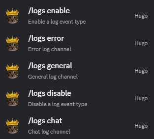
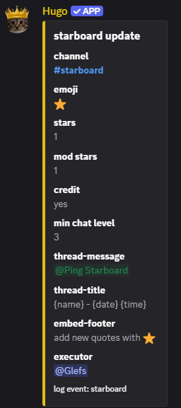
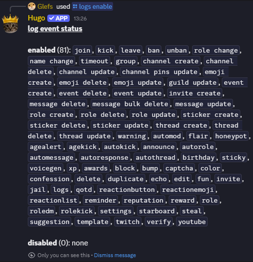
Configuration Basics
Use the dashboard for larger setup work
The dashboard is best for settings with many fields, message previews, role/channel pickers, and repeated configuration. Log in with Discord, choose a server where you have Manage Server, then open the section you want to edit.
Use slash commands for quick changes
Slash commands are best for one-off actions, moderation, testing, and small setting changes. The full option list is on the commands page.
Start with logs
Configure /logs early. Error logs tell you when Hugo cannot post, assign roles, moderate users, or complete a task. Chat logs and general logs should be visible only to trusted moderators.
Test before relying on automation
Use /emulate for announcement events, preview buttons in the dashboard where available, and small test channels before enabling broad moderation, autoresponse, role, or message automation.
Troubleshooting
Hugo cannot assign or remove a role
Check Manage Roles, then move Hugo's highest role above the target role. This is the most common cause even when the command looks correct.
Hugo cannot post an embed
Check channel permissions for View Channel, Send Messages, Embed Links, and Attach Files. Also check whether the feature is sending to the channel you expect.
The dashboard does not show your server
Make sure Hugo is in the server, you are logged in with the right Discord account, and your account has Manage Server or administrator access there.
An automation is not firing
Check that the feature is enabled, channel and role filters match the test case, cooldowns are not blocking it, and Hugo has permissions in both the source and output channels.
Template Setup
- Create a server from the Hugo server template.
- See something you don't like? Complete the setup before making changes. The setup process will copy onboarding prompts, command settings, logs, announcements, colors, schedules and supporting assets into your server. If you make changes before finishing the setup, the command will refuse to work.
- Invite Hugo to the server and give Hugo the
@Botrole. You may need to open the#gatechannel to see Hugo. - Open Server Settings, go to Roles, and drag the
@Hugorole near the top of the role hierarchy so it sits above the roles Hugo needs to assign or remove. - Open Server Settings and click Enable Community. Discord onboarding only works on Community servers.
- When Discord asks for the rules/guidelines channel, select the second-from-the-top
#ruleschannel, which is the one meant for unverified users. - Finish the remaining Community prompts and keep the safe defaults for
@everyone. - After the template, role hierarchy, and Community setup are ready, run
/setupcopy.
The template intentionally has two #rules channels and two #color channels because one pair is for unverified users and one pair is for verified users. The other channels are vaguely named #gate (captcha channel) and #void (honeypot channel) to confuse bots. The filler channels in the template are not random junk either. Discord onboarding has channel-count and default-channel requirements, so those filler channels are there because onboarding will not work correctly without them.
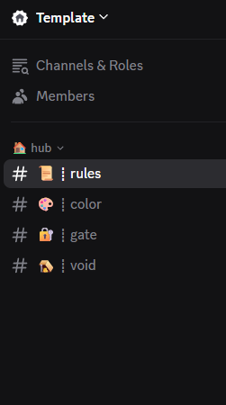
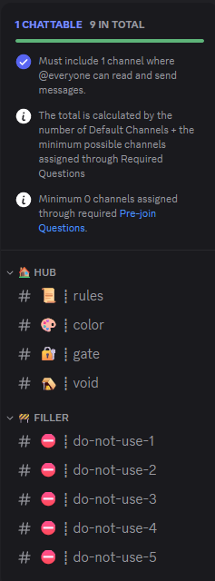
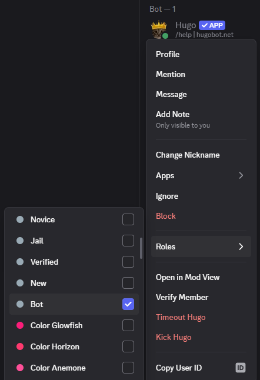
@Bot role after inviting it. This role has the necessary channel permissions.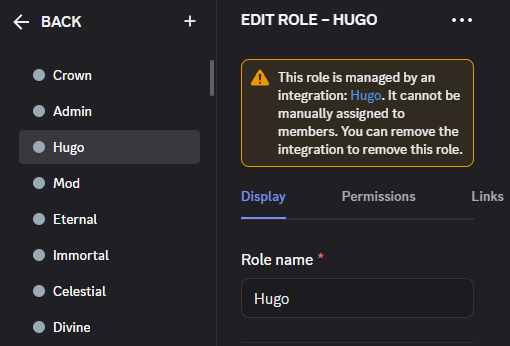
@Hugo role high enough in the role hierarchy to manage every role Hugo needs to touch.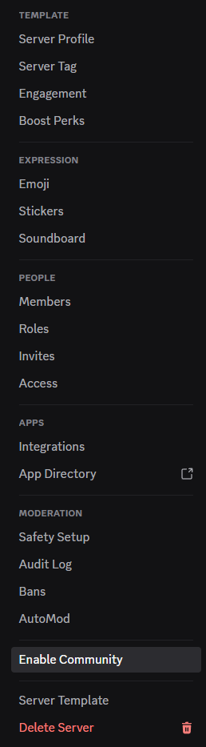
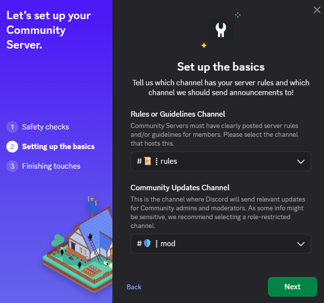
#rules channel when Discord asks for the rules channel.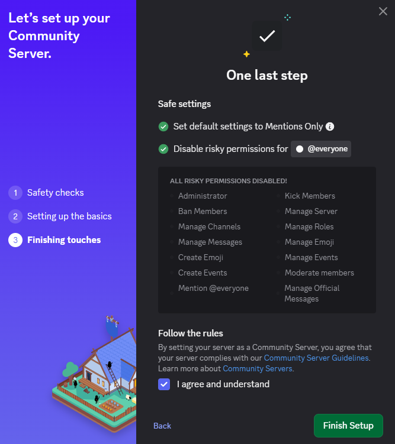
The onboarding itself will look like this for a joining user:
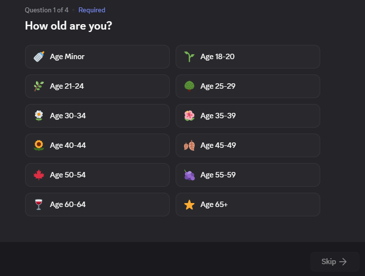
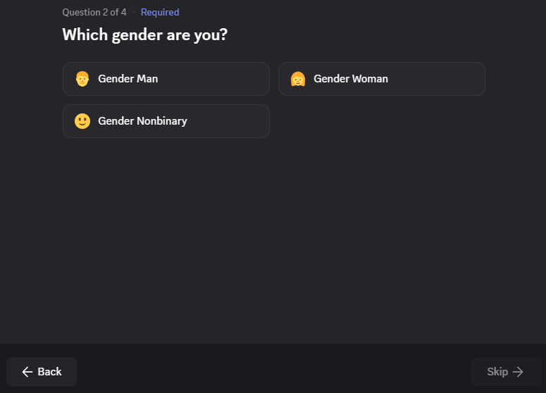
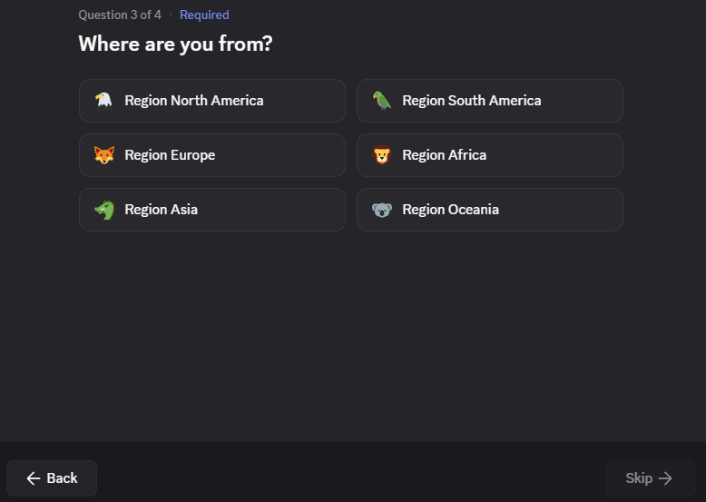
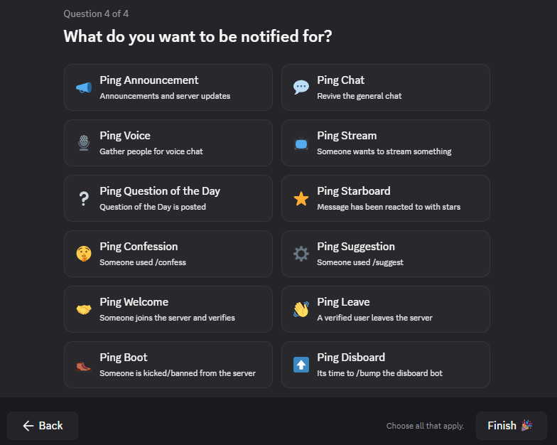
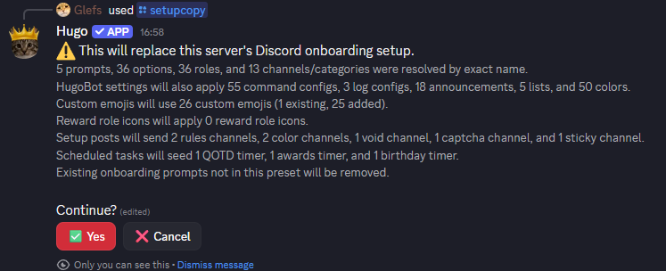
Messages, Templates, and Replacements
Many Hugo features let you customize message text, embed fields, titles, footers, and channels. The dashboard shows replacements next to the fields that support them. Common replacements include {tag}, {name}, {user}, {date}, and {time}, with feature-specific replacements such as invite, level, role, reason, duration, or rank values where relevant.
Some message fields also support random variants, so Hugo can pick from multiple possible lines instead of sending the exact same text every time.
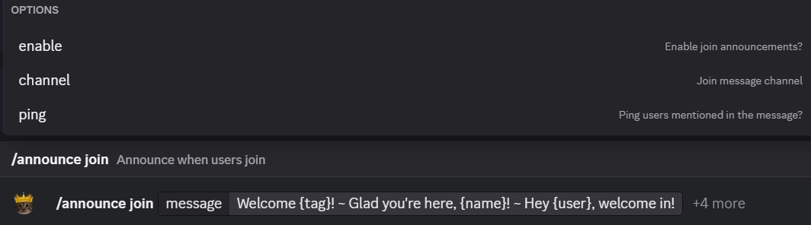
~, for example: Welcome {tag}! ~ Glad you're here, {name}! ~ Hey {user}, welcome in!Settings
Use /settings for server-wide Hugo behavior such as timezone, log name formatting, thread archive duration, and whether Hugo should resolve channels and roles by name when a saved Discord ID no longer works.
The resolve-by-name option is useful when you need to replace a channel without reconfiguring every command that points to it. For example, you can duplicate #general, delete the old #general to wipe its chat history, rename the replacement back to #general, and Hugo can still find it for features like /announce that were configured to post there.
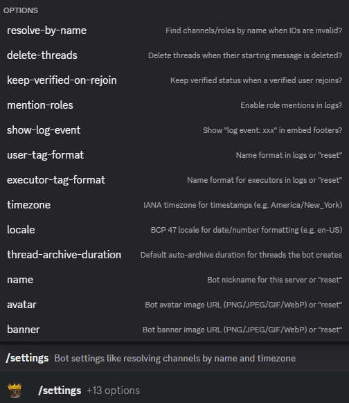
/settings to control server-wide Hugo behavior such as timezone, name formatting, and resolve-by-name behavior.Verification Roles
Use /role to define the main server roles Hugo should treat as @Verified, @Unverified, @Moderator, and @Jail roles.
The @Moderator role is used to determine /group channel permissions, /starboard reactions and /flair role placement.
The @Jail role and moderators using /jail temporarily removes a user's @Verified and @Unverified roles and strips them of their /group channel permissions, but you need to create a #jail channel and hide all others for the @Jail role yourself.
The @Verified role can be granted through solving the captcha, by a moderator using /verify, or through a reaction role setup. Use /reactionemoji, /reactionbutton, or /reactionlist depending on whether you want emoji reactions, buttons, or dropdown lists. Use /reactionemoji settings, /reactionbutton settings, and /reactionlist settings to turn each reaction role system on before using them. This allows you to turn them off later without using /reactionemoji remove, /reactionbutton remove, or /reactionlist remove on all the reactions.
The @Unverified role is granted automatically when someone joins, so you do not need to add it through /autorole. Similarly, you can set the default color role with /color default instead of using /autorole. No roles from other Hugo features should be added through /autorole.
Use /autorole for ordinary join roles that everyone should receive, such as notification roles or other default server roles. Use /autorole settings to turn the feature on before using /autorole add. This allows you to turn it off later without using/autorole remove on all the roles.
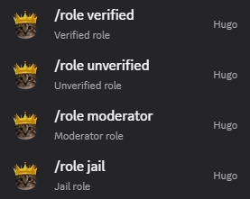
/role to set the main verification and moderation roles Hugo should manage.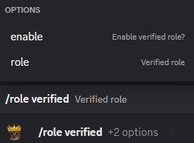
/verify, or a reaction role setup.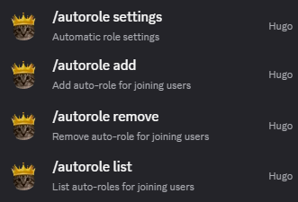
/autorole for normal join roles, not for unverified or other Hugo-managed feature roles.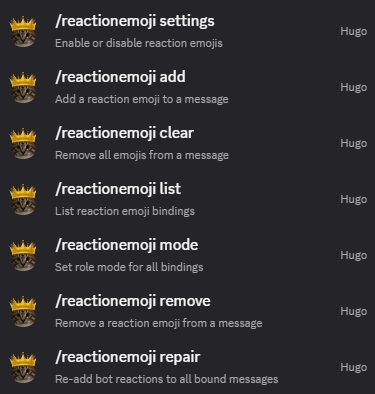
/reactionemoji for reaction roles based on emoji reactions.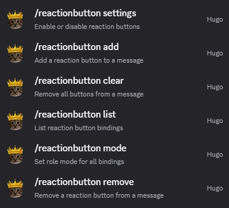
/reactionbutton when you want members to click buttons instead.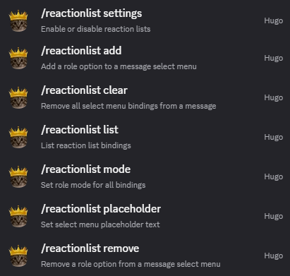
/reactionlist for dropdown-based role selection.Captcha
Use /captcha post to post the verification message that grants the verified role when solved. The regular version is straightforward: the user reads the captcha image and types the code.
You can also post the more cryptic fake-button version. That version avoids saying it is a captcha and instead presents a set of buttons where one choice is correct. It is much more effective at keeping bots out, but the tradeoff is that some real joining members may find it too confusing.
Use /captcha settings to configure punishments. Hugo can kick or ban users for not solving the captcha within a time limit, for entering the wrong code too many times, or for pressing fake buttons too many times.
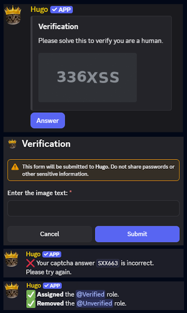
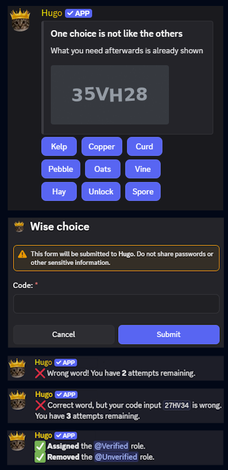
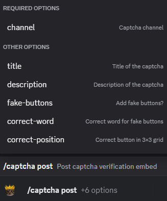
/captcha post to choose which captcha version you want to send.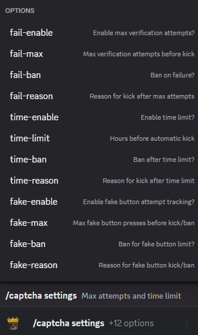
/captcha settings to control punishments, timers, and failure limits.Announcements
Use /announce to configure member-event messages such as joins, rejoins, leaves, bans, kicks, timeouts, jail events, and verification. Hugo has regular event announcements and verified-only announcements for some events, such as leave and leave-verified.
Those are separate announcement types. If both leave and leave-verified are enabled, a verified member leaving can send both messages: one to the dedicated arrival/departure bot channel, and one to the public channel where people will actually notice.
The point is to keep quick unverified join/leave churn out of the main server chat while still welcoming people who actually verify and making real member departures visible.
Announcement messages support replacements such as {tag}, {name}, {user}, {inviter}, {reason}, and {duration} when those values exist for the event. Run /announce leave or any other announcement command with no options to see the available replacements each one supports.
Use /emulate to test announcement outputs without waiting for the real event to happen.
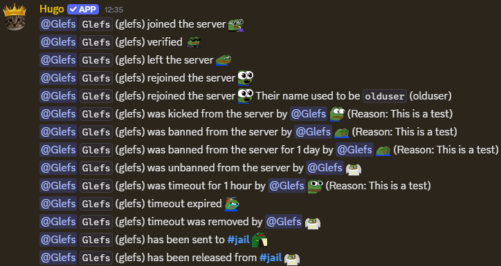
/emulate to test your announcement setup before relying on real joins, leaves, or other member events.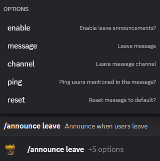
leave announcement can send the quieter departure message to the bot channel.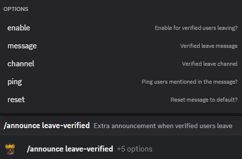
leave-verified announcement can send the visible public departure message for verified members.Auto Messages
Use /automessage for recurring messages that Hugo should send on a schedule, such as rules reminders, event reminders, rotating prompts, or channel housekeeping posts.
Use /automessage add to create a new automessage by choosing a title, channel, interval, message or saved /template, and optional delay before the first send.
You can make the message text pick from random variants by separating them with ~, for example: Read the rules. ~ Check the rules if you're new here. ~ Make sure you have read the rules.
Use /automessage settings to turn the feature on before using /automessage add. This allows you to disable all automessages at once later.
If you have several enabled automessages, /automessage spread can space them evenly across a window so they do not all fire at nearly the same time.
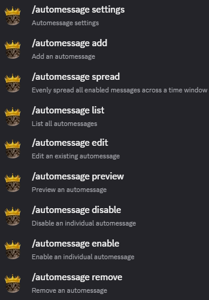
/automessage to manage scheduled recurring messages.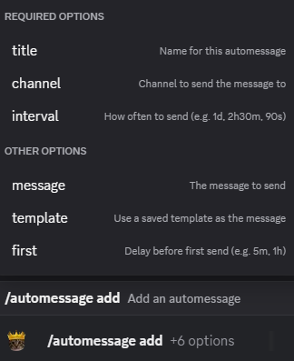
/automessage add to choose the title, channel, interval, and message or template.Auto Responses
Use /autoresponse when Hugo should respond automatically to messages that match a trigger. This is useful for common questions, rule reminders, keyword replies, or deleting repeated nuisance phrases after answering them.
Use /autoresponse add to create a named response with trigger text, a response message or saved template, and optional behavior such as replying to the message, deleting the trigger message, limiting it to one channel, using regex, requiring an exact match, or making the trigger case-sensitive.
You can also make the response text use random variants by separating them with ~, for example: Please check <#rules>. ~ The answer is in <#rules>. ~ Have a look at <#rules> first.
Use /autoresponse settings to turn the whole feature on before using /autoresponse add. This allows you to disable all autoresponses at once later.
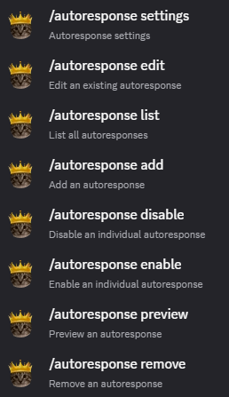
/autoresponse to manage automatic replies for matching messages.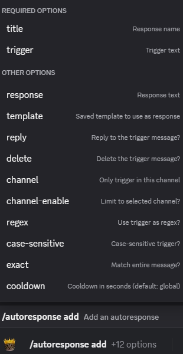
/autoresponse add to set the trigger, response, and optional matching behavior.Role DMs
Use /roledm when Hugo should DM a member after they gain a specific role. This is useful for onboarding instructions, role-specific rules, access notes, or explaining what a newly selected role actually unlocks.
Use /roledm settings to turn role DMs on before using /roledm add. This allows you to disable all role DMs at once later without using /roledm remove.
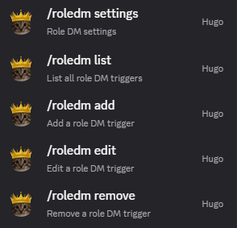
/roledm to manage DM messages that fire when members gain specific roles.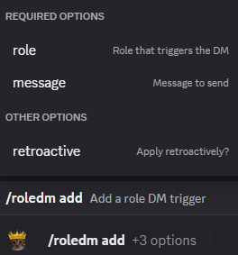
/roledm add to connect a role to the DM message members should receive. Set retroactive to true if you want the DM to be sent to members who already have the role.Bump Reminder
Use /bump for Disboard bump reminders. When Disboard posts its successful bump confirmation, Hugo can send your configured bump message immediately and schedule a reminder two hours later in the same channel.
Use the enable option on /bump to turn the feature on or off, bump to set the message sent after a successful bump, and remind to set the reminder message that tells members it is time to bump again.
You can make the bump and reminder messages use random variants by separating them with ~, for example: It's time to /bump the server again! ~ Bump time. ~ Please /bump the server when you can.
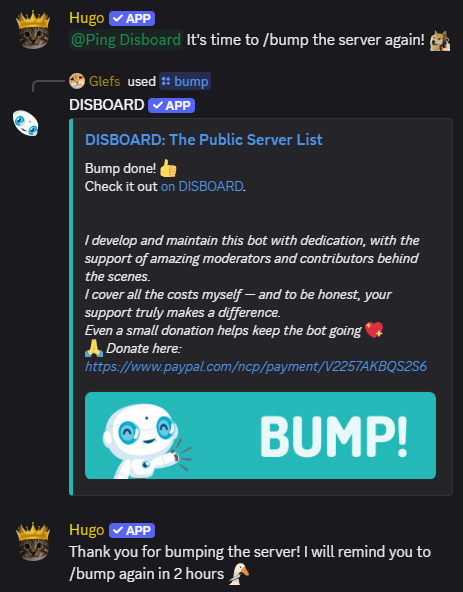
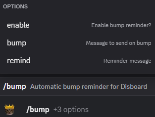
/bump to control the bump message, reminder message, and whether the feature is enabled.Auto Thread
Use /autothread when a channel is meant to be browsed as a feed, such as #memes, #selfies, art, clips, screenshots, or other post-first channels. Hugo can create a thread under each new post so replies stay attached to that post instead of filling the channel itself.
The point is that people can still react and say things like "lol thats so funny" in the thread, while the main channel stays easy to scroll. You can move from one meme, selfie, or post to the next without every conversation reply slowing down the feed.
Use /autothread settings to enable automatic threads and set the default thread title or thread message. This allows you to disable all automatic threads later without using /autothread remove. Per-channel entries can still override the defaults.
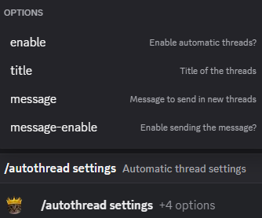
/autothread settings to control the global defaults for automatic threads.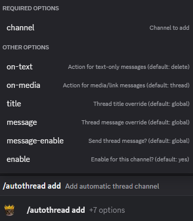
/autothread add to configure the per-channel thread behavior you want.Sticky Messages
Use /sticky when a channel should always keep an important prompt, rule, or format visible at the bottom. Hugo reposts the sticky message after people talk, so new members see what they are supposed to do without scrolling back through the channel history.
Use /sticky settings to enable sticky messages before using /sticky add. This allows you to disable all sticky messages later without using /sticky remove or /sticky disable on all of them.
For example, an #introductions channel can use a sticky introduction template so everyone follows the same format:
Name: Age: Gender: Location: About Me:
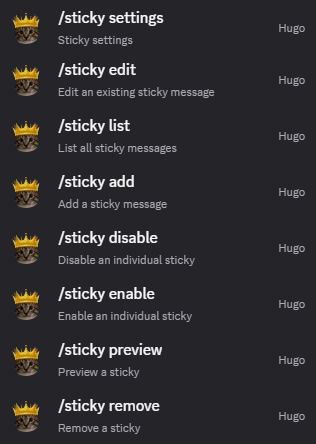
/sticky to manage sticky messages that stay visible in active channels.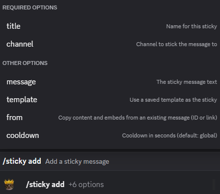
/sticky add to choose the channel and message that should be reposted.Voice Generator
Use /voicegen to turn a voice channel into a generator. When a member joins that generator channel, Hugo creates a temporary personal voice channel for them, moves them into it, and deletes the spawned channel again once it is empty.
Use /voicegen settings to enable voice generators before using /voicegen add. This allows you to disable all voice generators later without using /voicegen remove or /voicegen disable on all of them.
Discord calls the parent "folder" a category. Spawned channels are created under the same parent category as the generator channel, so they inherit that category's permissions. Hugo also copies the generator channel's user limit and bitrate, then places the new channel right after the generator.
Use /voicename to let the owner of a spawned channel rename it. Only the user who generated that channel can rename it, and Discord may rate-limit repeated voice channel renames.
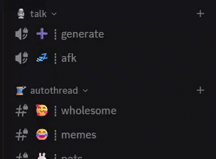
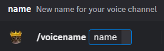
/voicename to let the owner of a spawned channel rename it.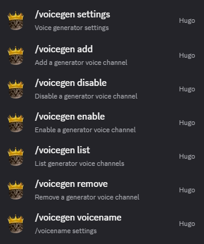
/voicegen to manage generator channels and their defaults.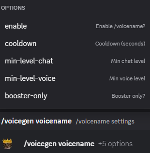
/voicegen and /voicename work together when you want users to have private temporary channels they can rename themselves.Duplicate Channels
Use /duplicate to create a new channel using another channel's permission setup, or to copy one channel's permissions onto an existing target channel. It works with channel types such as text, voice, announcement, stage, forum, and category channels.
The main use is copying category permissions, which Discord does not let you do by default. Instead of manually rebuilding every permission overwrite, you can configure one channel or category correctly and copy that setup wherever it is needed.
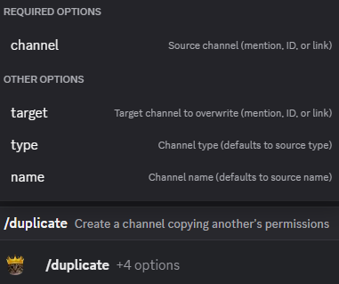
/duplicate to copy channel or category permission setups instead of rebuilding them manually. Enter either a target channel to overwrite or name and type for a new one.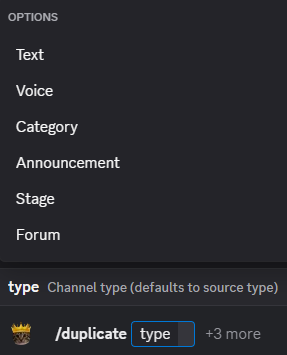
Account Age
Use /agekick when you want Hugo to automatically kick or ban accounts that are too new. This is useful for blocking fresh alt accounts, raid accounts, and obvious throwaways before they can settle into the server.
If you do not want automatic punishment, use /agealert instead. It posts an alert when a fresh account joins, so moderators can review the member manually and decide whether the account is actually a problem.
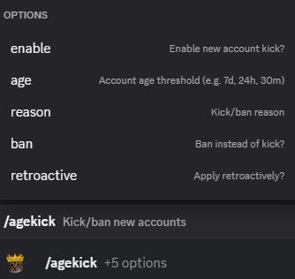
/agekick when you want fresh accounts to be kicked or banned automatically.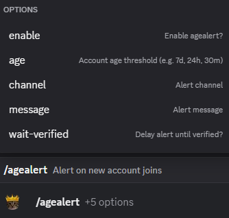
/agealert when you only want moderators to be notified about fresh accounts joining.Role Kick
Use /rolekick to automatically kick or ban members who receive specific forbidden roles. Use /rolekick settings to turn it on before using /rolekick add. This allows you to disable it later without using /rolekick remove on all roles. You can choose kick or ban mode, and optionally apply it retroactively to members who already have that role.
A common use is age roles. If your server has an Age Minor role from reaction roles or Discord server onboarding, users can effectively snitch on themselves by selecting it. Hugo can then remove them automatically instead of making moderators manually watch for that role.
/rolekick to manage forbidden-role moderation without watching for those roles by hand./rolekick settings to enable the feature and choose whether it kicks or bans./rolekick add to choose which roles should trigger that punishment.Auto Kick
Use /autokick when you want new joins to prove they are active by sending a minimum number of messages within a set time. If they do not hit the required message count before the timer expires, Hugo can kick or ban them with your configured reason.
The counter only starts once, right after the member joins while /autokick is enabled, and it does not reset after that. Messages sent before /autokick was enabled are not counted. Backfilling old activity would require Hugo to read every message in every channel, so the feature only tracks messages from the point it is enabled. That is just a limitation you will have to live with.
/autokick to set the message requirement, time window, and punishment for inactive new joins.AutoMod
Use /automod to remove problem messages before moderators have to handle them manually. Hugo can check for bad words, repeated text, server invites, external links, excessive caps, emojis, spoilers, mentions, zalgo text, and message spam.
Use /automod settings to enable AutoMod and configure warning messages sent by DM or in the same channel. Use /automod rule to choose which rules are enabled and whether each one should delete the message, delete and warn the member, or stay disabled.
Use /automod add-action to add escalation actions when a member racks up enough AutoMod infractions in a time window. Escalations can timeout, kick, or ban, and /automod remove-action and /automod list-actions manage that escalation list.
Server moderators and the server owner are ignored by AutoMod. Message deletion needs Manage Messages in the affected channel, and escalation actions need the matching Moderate Members, Kick Members, or Ban Members permission plus normal Discord role hierarchy.
/automod to manage message filtering and escalation behavior./automod settings to enable the system and choose how warnings are sent./automod rule to decide which rules are enabled and what each one does./automod add-action to add timeout, kick, or ban escalations after repeated infractions.Warnings
Use /warn to issue a warning to a member with a reason, optional DM or channel notification, and optional expiry. Moderators can use /warnings to view warning history for one user, one moderator, or the whole server.
Use /warning settings to turn the warning system on or off, set the moderator notification channel, and choose the default expiry for new warnings. Use /warning add-threshold, /warning remove-threshold, and /warning list-thresholds to automate timeout, kick, or ban actions after enough active warnings.
Use /warning edit, /warning remove, and /warning clear when you need to correct, deactivate, or clear warning records without deleting the whole warning system.
/warning command group to edit, remove, clear, and manage warning thresholds./warning settings to control the warning system defaults and notification behavior./warn to issue a warning with a reason, notification, and optional expiry./warnings to review warning history for a user, moderator, or the whole server.Honeypot
Use /honeypot for trap channels that real members should not be using. If a non-bot user sends a message in one of those channels, Hugo deletes the message and kicks or bans them, depending on your settings.
Use /honeypot settings to enable the feature, choose kick or ban mode, and set the moderation reason. Use /honeypot add to add trap channels and optionally post a bait message, then use /honeypot remove and /honeypot list to manage the channel list.
This is useful for catching bots or raiders that blindly post in every visible channel. Hugo needs Kick Members to use honeypot, Ban Members if ban mode is enabled, and a role high enough to act on the member who triggers the trap.
/honeypot to manage trap channels that should never be posted in by real members./honeypot settings to enable the feature and choose whether it kicks or bans.Leveling
Use /xp to configure Hugo's chat and voice XP systems. Use /xp settings chat, /xp settings voice, and /xp settings combine to enable or disable each XP pool or combined XP mode, then tune cooldowns, XP ranges, ignored channels, level-up messages, and level/rank/leaderboard responses.
Use /reward to attach roles to specific levels. Use /reward settings chat and /reward settings voice to enable or disable chat and voice rewards, decide whether old rank roles should be removed, and then add the actual role rewards for each level with /reward add.
/xp settings chat to tune chat XP behavior./xp settings voice to tune voice XP behavior./reward settings voice to control voice reward behavior./reward add chat to attach a role to a chat level./reward promote chat to change the message when rewards are granted./xp advance voice to change the message when advancing voice levels./set xp chat can move someone forward when you need to adjust their level-related progress manually.Reputation
Use /reputation settings to turn Hugo's reputation system on or off, set the reputation cooldown, configure feedback messages, and decide whether reputation must be given by replying to someone. Use /reputation add, /reputation remove, /reputation edit, and /reputation list to manage the keywords that grant +rep.
Members can use /rep to check someone's reputation total and /repboard to view the server reputation leaderboard. Use /reputation rep and /reputation repboard to tune those command surfaces separately.
/reputation to manage the overall reputation system and its command surfaces./reputation settings to control cooldowns, feedback messages, and how reputation can be given./reputation rep to control how members check reputation totals./reputation add to manage which keywords or triggers grant +rep.Awards
Use /awards settings to turn periodic awards on or off, choose the announcement channel, and set the weekly or monthly posting schedule. Hugo can rank members by messages sent, chat XP, voice XP, or reputation, then post the winners on a schedule or immediately with /awards post.
Each award category can show a configurable number of winners and optionally grant a winner role. You can preview the current period with /awards preview, list configured awards with /awards list, and exclude roles from winning with /awards exclude.
/awards to manage recurring winner posts based on server activity./awards settings to control the schedule, channel, and overall awards behavior./awards add to define the award categories and winner criteria you want./awards post to publish the current winners immediately.Color Roles
The /color feature lets members choose their own name color from a color-role menu. Hugo comes with 50 preconfigured colors, so you can create a full color list without manually adding every color yourself.
Use /color create to create the roles around a role anchor, then /color post to post the selection embeds. Use /color default to give users a fallback color before they choose one, and /color remember to restore color roles when members rejoin. You can still add, edit, remove, or reorder colors later if your server wants a custom palette.
The /flair feature is the more personal version: users can create a personal role with their own hex RGB color, and if enabled, a custom role icon too. Use /color flair to tune who can use it, whether custom names or icons are allowed, and whether flair roles should be recreated on rejoin.
/color to manage the color-role system and how members pick colors./color create to generate the color roles around a chosen anchor role./color post to publish the color selection embeds for members./color flair to control who can create custom flair roles and what they are allowed to customize./flair lets users create a more personal custom role with their own color and, if enabled, a role icon.Groups
The /group feature is for private channel access without creating a visible role for every private space. Instead of giving someone a role that other members can notice and ask about, Hugo stores a named group and applies the needed channel permissions directly for the users in that group.
This is useful when you want hidden channels for a small set of people, but you do not want a public-looking role that makes everyone wonder what it is for or why they do not have it too. It also avoids the tedious Discord admin work of opening every channel and manually adding or removing user permission overwrites one person at a time.
/group to create named private-access groups without exposing a visible server role for each one./group edit-permissions to control which channel permissions Hugo grants to members and moderators in that group./group delete when a private group is no longer needed and you want Hugo to remove its saved setup.Confessions
Users can submit anonymous confessions to a configured channel with /confess, and members can view, edit, and delete their own confessions with /confessions.
Use /confession confess and /confession confessions to control the confession channel, embed style, threads, author logging, cooldowns, max submissions per user, and level or booster requirements. Moderators can use /reveal when they need to identify the author of an anonymous confession or suggestion for moderation reasons.
/confession to configure the anonymous confession system, including the posting channel, format, and moderation-related options./confession confess to control the main confession posting flow and who can use /confess./confession confessions to control whether members can manage their own confession history with /confessions.Suggestions
Users can submit suggestions to a dedicated suggestion channel with /suggest, and members can view and delete their own suggestions with /suggestions.
Use /suggestion suggest and /suggestion suggestions to control the suggestion channel, voting reactions, discussion threads, message or embed style, optional author credit, anonymous submissions, cooldowns, per-user limits, and level or booster requirements. Moderators can use /reveal to identify an anonymous suggestion author when they need to handle abuse.
/suggestion to configure where suggestions are posted and how Hugo presents and moderates them./suggestion suggest to control the main suggestion submission flow and who can use /suggest./suggestion suggestions to control whether members can review and delete their own submissions with /suggestions.QOTD
Use /qotd settings to turn automatic Question of the Day posts on or off, choose the questions channel, set the interval, and configure message, embed, thread, credit, and pending-pitch display options.
Members can use /pitch to submit question ideas. Use /qotd pitch to tune that command surface separately. Moderators can use /pitches to review and manage those pitches, and /qotd subcommands such as add, bulk-add, queue, post, skip, move, remove, preview, and next to control what gets posted and when.
/qotd to manage the Question of the Day feature./qotd settings to configure the core QOTD options./qotd pitch to tune the pitch command surface separately.Starboard
Use /starboard settings to turn the starboard on or off and highlight messages that receive enough star reactions. You can set the starboard channel, required stars, moderator-star threshold, ignored channels or categories, custom post text, embed formatting, thread creation, and whether the original author is credited.
Members can use /quotes to view and delete starboard entries for their own messages. Use /starboard quotes to tune that command surface separately, including whether it is enabled, its cooldown, and any level or booster requirements.
/starboard to manage starboard behavior./starboard settings to configure the core starboard options./starboard quotes to control the quotes command surface.Reminders
Users can create reminders with flexible time formats like 2h 30m, 3mo, or 1 year 3 days using /remind, and members can view, edit, cancel, and search their own active reminders with /reminders.
Use /reminder remind and /reminder reminders to control whether those command surfaces are enabled, cooldowns, the allowed reminder channel, whether /remind replies are ephemeral, and level or booster requirements.
/reminder remind to control the remind command surface./reminder reminders to control the reminders command surface.Birthdays
Users can set their birthday with /birthday. They can choose the day and month, optionally add a birth year if they want Hugo to show their age, and enable or disable birthday announcements for themselves.
Use /birthdays settings to turn birthday announcements on or off and control the announcement channel, birthday messages with or without age, optional birthday threads, thread messages, and embed title or footer text. Birthday announcements follow the server timezone configured in /settings.
Use /birthdays birthday to control the /birthday command surface itself, including whether it is enabled, its cooldown, whether responses are ephemeral, and any level or booster requirements.
/birthdays settings to configure the core birthday options./birthdays birthday to control the birthday command surface./birthday.Stream Alerts
Use /twitch to watch Twitch streamers and post when they go live. Use /twitch settings to turn Twitch notifications on or off and set the notification channel and message, then add streamers by username or Twitch URL with /twitch add.
Use /youtube to watch YouTube channels and post when they upload a new video. Use /youtube settings to turn YouTube notifications on or off and set the notification channel and message, then add channels by channel ID, channel URL, or handle with /youtube add.
When you add a Twitch streamer who is already live or a YouTube channel that already has uploads, Hugo seeds the current stream/video so it does not immediately spam old notifications. It will notify on the next new live stream or upload.
/twitch to manage Twitch alerts./twitch settings to configure Twitch alerts./youtube to manage YouTube alerts./youtube settings to configure YouTube alerts.Fun Commands
Use /fun to configure the smaller user-facing commands: /wisdom, /roll, /cat, and /fetch. Each one can be enabled or disabled, given a cooldown, and tuned separately.
You can make a fun command ephemeral, meaning only the person who ran the command sees the response. You can also make it booster-only, require a minimum chat or voice level, and for public replies, limit it to a specific channel so the command does not spread across the server.
Use /block when a specific user should not be able to use one of those commands anymore without disabling it for everyone else.
/fun to manage fun commands./cat./wisdom command./block to restrict user access to commands.Message Tools
Use /template to save reusable messages and embeds. Templates are useful when multiple features should send the same polished message, or when you want to build an embed once and reuse it in automessages, autoresponses, sticky messages, or other message-based features.
Use /echo to send a message as Hugo. This is useful for announcements, rules, formatted embeds, or any message that should come from the bot instead of a moderator's personal account.
Use /edit to edit a message Hugo already sent, including messages created through /echo or other bot-authored posts. That lets you fix wording or update information without deleting and reposting the message.
/template to manage templates./template create.Reference
Use these pages when you need exact command options, visuals, policies, or external support.